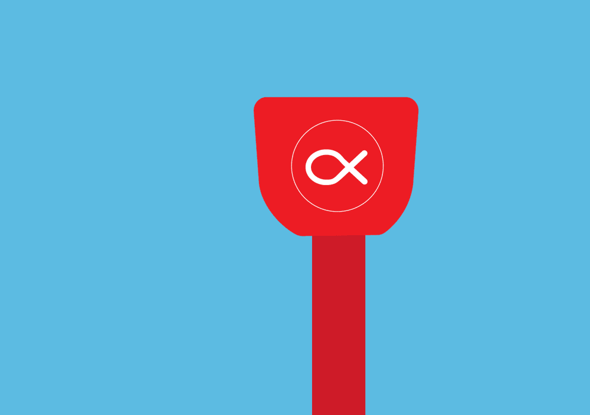

Snap & Go
A project looking into mobile media and how we could potentially use the technology on mobile devices to help better technological interactions in our everyday lives.

The Near Field Communication (NFC) technology used on transport cards was a major focus while researching mobile media and how we use it in today's technology focused world.
The idea was to access NFC which is available on most smartphones and be able to use the technology of transport cards but make it available on any piece of wearable technology. This included mobile phones as well as smart watches and rings.
The gifs were created to visually showcase how the technology would work for the user. I chose a flat illustration style with simple colours that contrasted against my main focus point.